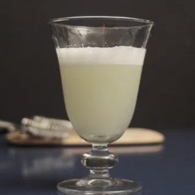

Bebidas, Pisco
30mL suco de limão Taiti (~01 limão médio)
20mL xarope de açúcar
45mL pisco
01 clara
Gelo
Bitter Angostura
Colocar todos os ingredientes na coqueteleira e chacoalhar por 30-45 segundos. O gelo é para gelar a bebida, então, pode colocar bastante.
Coar sobre um copo e pingar 1-2 gotas de bitter.
Xarope de açúcar: mistura em partes iguais de água e açúcar, se for em volume. Por medida: 125mL água para 100g açúcar cristal. Misturar até dissolver.